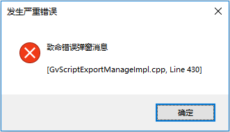
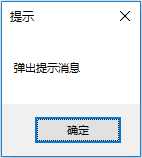
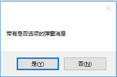

表示要输出的消息类型，是枚举类型，和消息报告工具属性栏可选类型一致。
| 分类 | 接口名称 | 接口描述 |
|---|---|---|
| 属性 | eMRTNote | 提示消息，显示在提示窗口。 |
| eMRTWarning | 警告消息，显示在警告窗口。 | |
| eMRTError | 错误消息，显示在错误窗口。 | |
| eMRTFatalErr | 致命错误消息，会弹出一个错误提示对话框。 | |
| eMRTPopupNote | 弹出提示消息，弹出一个普通提示对话框。 | |
| eMRTResultOption | 弹出选项消息对话框，可选“是”或“否”。 |
功能：消息报告函数输出结果为致命错误消息，会弹出错误提示对话框。

功能：消息报告函数输出结果为弹出提示消息，会弹出消息提示对话框。

功能：消息报告函数输出结果为弹出带有选项的对话框，会弹出带有是否选项的提示对话框。

无。
python
genote = GvVisionAssembly.GeMsgReportType
noteType = genote.eMRTPopupNote
bRe = GvVisionAssembly.ReportMessage("弹出提示消息", noteType, False)
print(bRe)